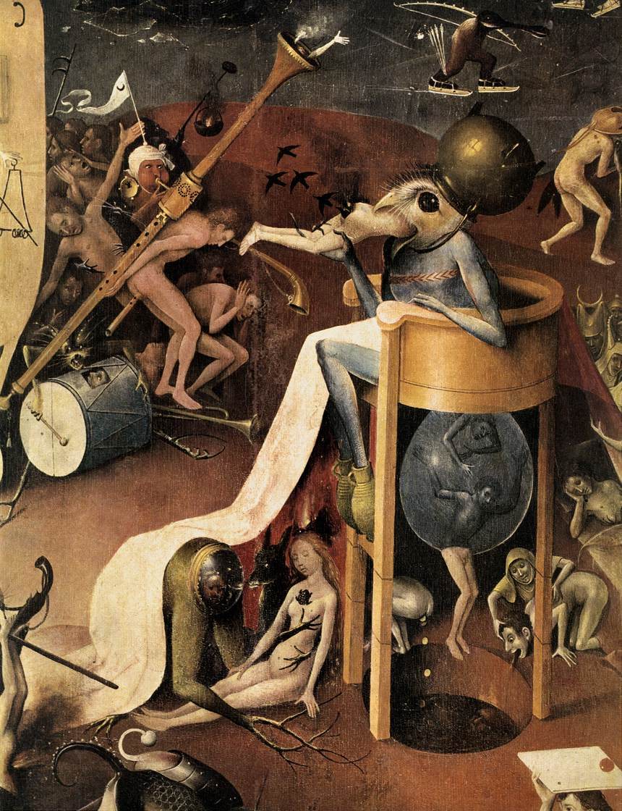

Quand l’art donne vie à nos monstres
Démons, sorcières et visions inquiétantes : les artistes donnent forme à nos peurs et à nos imaginaires.
D’une œuvre à l’autre, suivez les détails qui font naître l’étrange, le trouble ou le fantastique.